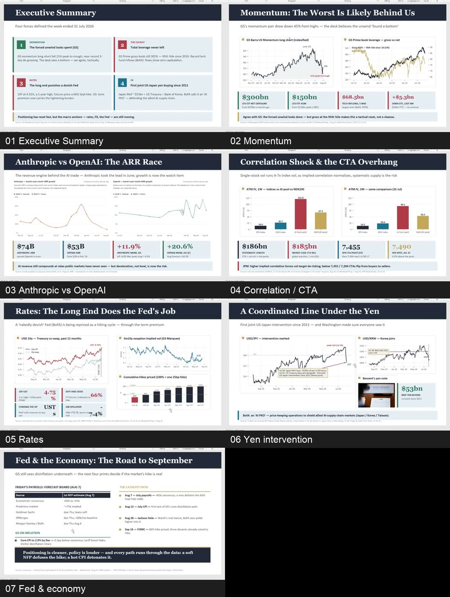
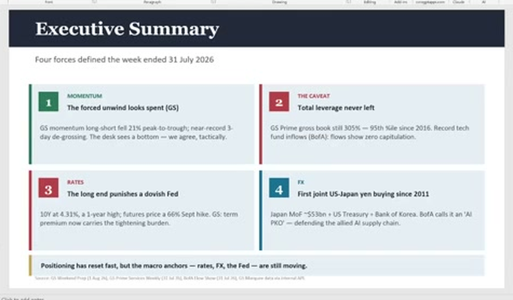
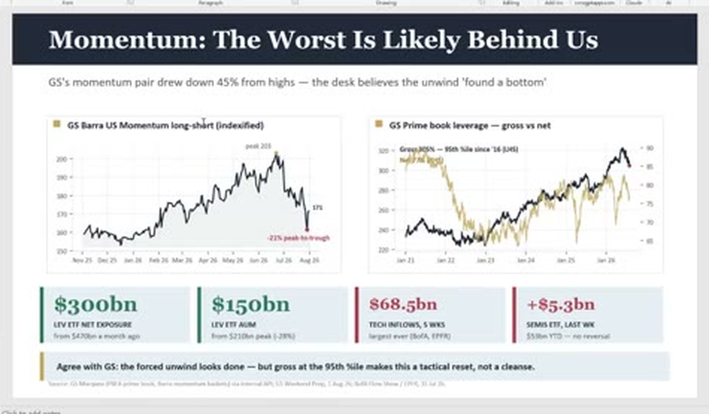
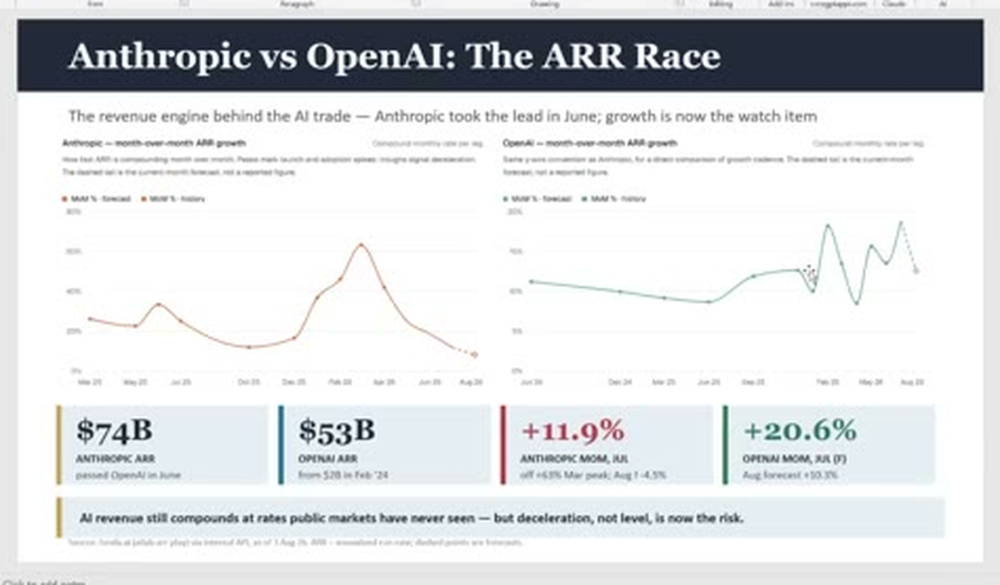
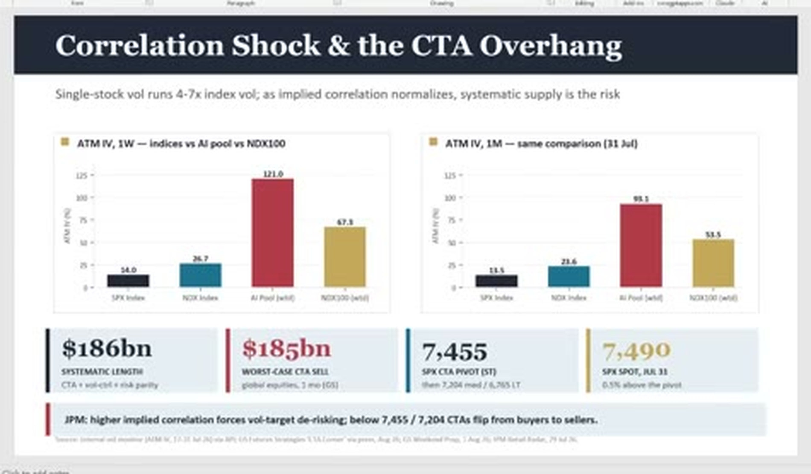
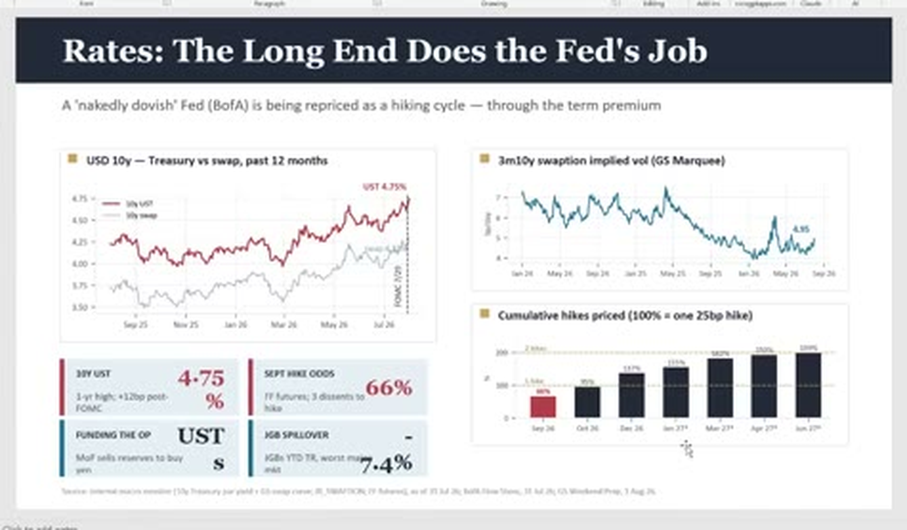
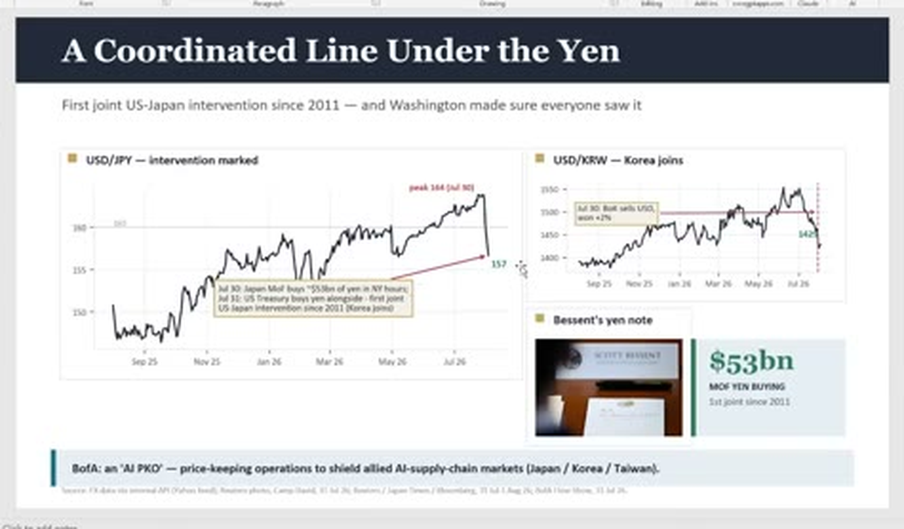
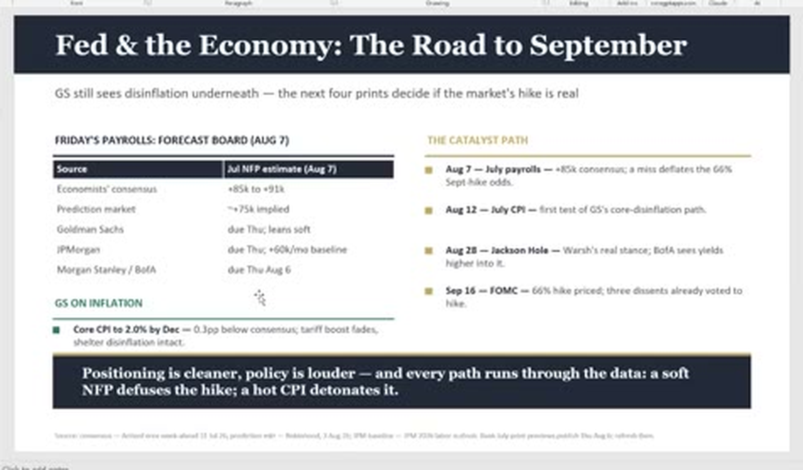
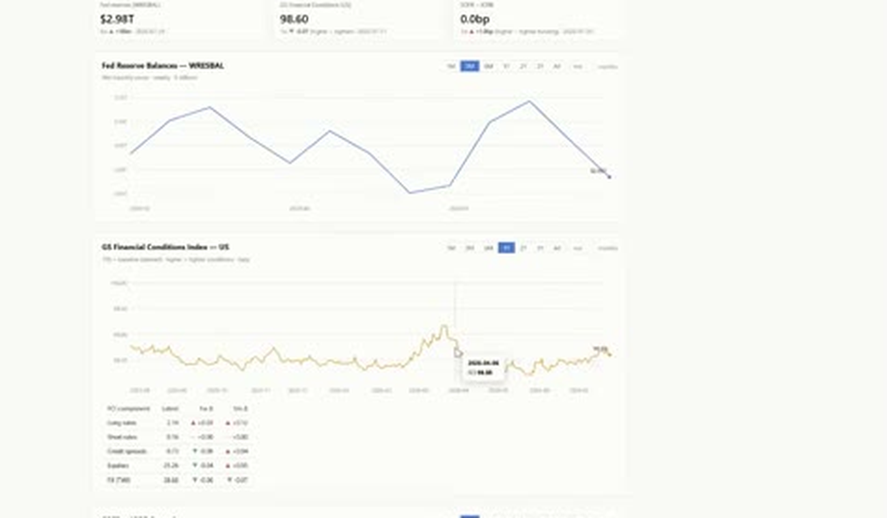

00:00–00:35
开场：Momentum 卖完了吗
问题落在“还有多少弹药”。讲者倾向于认为阶段性的被迫卖盘已经释放，但不把它等同于全面清杠杆。
这期的关键不是“有没有风险”，而是短线强平、长端利率、日元政策和 AI 资本开支分别处在不同的时间尺度。
ocr/。字段契约 ↗Agent 主输入是 JSONL 和逐页图片；当前页面只是阅读入口。自动转录和 OCR 可能误识别专名、数字与标签。
视频把市场拆成两层：短期看 Momentum、Prime book、CTA 和配对交易是否继续触发机械卖压；长期看 AI 资本开支能否被最终客户收入承接。净敞口下降可以带来反弹，但不等于总杠杆已经回到低位。
因此，“卖完了吗”不是单一数据问题。要同时看强平是否结束、资金是否重新流入、长端利率是否继续抬升，以及模型厂和云厂的收入能否解释 CAPEX。
先读时间轴，再看 deck 的原图，最后打开带时间戳的自动转录。所有数字按“视频/截图中的主张”阅读，不当作审计口径。
问题落在“还有多少弹药”。讲者倾向于认为阶段性的被迫卖盘已经释放，但不把它等同于全面清杠杆。
Situation Awareness、半导体、Neocloud 和软件配对交易被放在同一个仓位机制里讨论：反弹可能来自空头回补，而不是基本面全面反转。
个股 AI 波动率远高于指数。真正的尾部风险是 implied correlation 回升，叠加 Gamma 与 vol-target 机制同步去风险。
长端上行不只是“利率高所以股票跌”，还涉及 term premium、国债供给、通胀结构和市场对 Fed 路径的重新定价。
日元政策被解释成用时间换空间的防守。后续观察窗口包括 payrolls、CPI、Jackson Hole 和 FOMC。
股票融资和债务融资可以滚动，最终客户真正支付的收入才决定长期资本开支是否自洽。
以下图片来自视频画面整理。`99` 是约 19 分钟出现的网页/行情页，不属于 PPT 主数据页。逐页元数据和 OCR 见 deck.jsonl ↗。


四条主线：Momentum、总杠杆、长端利率和日元。

强平已缓和，但 Prime book 与资金流不支持“完全洗净”的说法。

重点不是 ARR 绝对值，而是高增速能否持续。私有 ARR 估计需单独核验。

指数级卖压是否传导到高波动 AI 单股，取决于相关性和系统性策略。

关注 10Y、swaption volatility 和加息定价，不把单一概率当作政策结果。

事件叙事与金额估计要分开，新闻报道不能替代官方结算数据。

这是事件树：soft NFP 与 hot CPI 对利率预期的方向相反。

单独留档，避免把网页状态误读成 deck 的正式数据页。
| 内容类型 | 本页怎么使用 | 不要怎样理解 |
|---|---|---|
| 自动转录 | 用于定位观点、时间段和关键词；专名与数字按截图复核。 | 不是人工校订的逐字稿，也不是正式会议纪要。 |
| 市场观察值 | 例如 10Y、USD/JPY、SPX spot 等，标注为视频时点快照。 | 不要把历史快照当成当前行情或未来预测。 |
| 模型估计 / 定价 | CTA pivot、worst-case sell、NFP 预期和加息概率保留其估计属性。 | 不是交易所、监管机构或审计财报发布的硬阈值。 |
| 私有 ARR / CAPEX 叙事 | 作为视频中的长期风险框架阅读。 | 不等同于 Anthropic、OpenAI 或其他公司的审计财务口径。 |
本页是资料整理与阅读辅助，不构成投资建议、交易信号或 Pine Script 实现证据。原始附件仍保留在当前目录，可直接回看和复核。